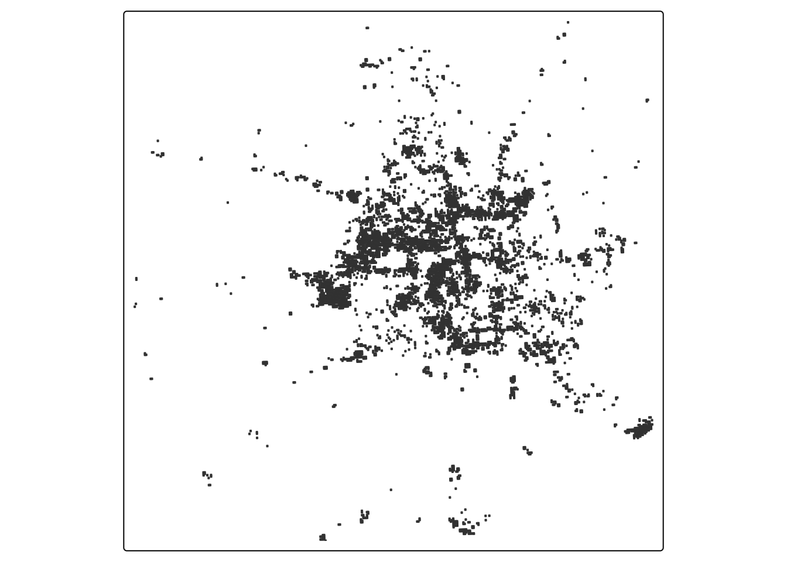

library(terra) # raster handling
library(tidyverse) #for boxplot
library(tmap) # map making
library(kableExtra) # table formatting
library(spData) # spatial data
library(spDataLarge) # spatial data
library(geodata) # spatial data
library(here)
library(sf)
library(raster)
library(stars)
library(ggspatial) # For scale bar and north arrow
library(patchwork)Houston Texas Environmental Impacts
Winter Storm Event, Feburary 2021- Blackout
Import Libraries
Importing Data
texas <- st_read(here::here('data','ACS_2019_5YR_TRACT_48_TEXAS.gdb'),
layer ='ACS_2019_5YR_TRACT_48_TEXAS' ,
# Adding to not show output message
quiet = TRUE)
homes <- st_read(here('data','gis_osm_buildings_a_free_1.gpkg'),
query = "SELECT * FROM gis_osm_buildings_a_free_1 WHERE (type IS NULL AND name IS NULL)",
# Adding to not show output message
quiet = TRUE)
roads <- st_read(here('data','gis_osm_roads_free_1.gpkg'),
query = "SELECT * FROM gis_osm_roads_free_1 WHERE fclass='motorway'",
# Adding to not show output message
quiet = TRUE)
# Raster Data -
vnp_05 <- rast(here("data", "VNP46A1", "VNP46A1.A2021038.h08v05.001.2021039064328.tif"))
vnp_06 <- rast(here("data", "VNP46A1", "VNP46A1.A2021038.h08v06.001.2021039064329.tif"))
vnp_05_2 <- rast(here("data", "VNP46A1", "VNP46A1.A2021047.h08v05.001.2021048091106.tif"))
vnp_06_2 <- rast(here("data", "VNP46A1", "VNP46A1.A2021047.h08v06.001.2021048091105.tif"))
# Using Stars for before and after
vnp_051 <- read_stars(here("data", "VNP46A1", "VNP46A1.A2021038.h08v05.001.2021039064328.tif"))
vnp_061 <- read_stars(here("data", "VNP46A1", "VNP46A1.A2021038.h08v06.001.2021039064329.tif"))
vnp_05_21 <- read_stars(here("data", "VNP46A1", "VNP46A1.A2021047.h08v05.001.2021048091106.tif"))
vnp_06_21 <- read_stars(here("data", "VNP46A1", "VNP46A1.A2021047.h08v06.001.2021048091105.tif"))Creating Raster Objects with Stars Package
# Checking Extents:
if(st_crs(vnp_05) == st_crs(vnp_06)){
print("Extents match :)")
} else{
warning("extents do not match :(")
}[1] "Extents match :)"# Stars
vnp_feb7<- st_mosaic(vnp_051,vnp_061)
vnp_feb16 <- st_mosaic(vnp_05_21, vnp_06_21)
#Cropping extent
extent <- st_bbox(c(xmin = -96.5, # xmin
ymin = 29, # ymin
xmax = -94.5, # xmax
ymax = 30.5),
crs = st_crs(vnp_feb7))
# Arranging plots- side by side
par(mfrow = c(1, 2))
#Cropped VNP
vnp_7_crop <- st_crop(vnp_feb7, extent)
vnp_16_crop <- st_crop(vnp_feb16, extent)
vnp_07 <- plot(vnp_7_crop, main = "Before Storm", key.pos = 1)
vnp_16 <- plot(vnp_16_crop, main = "After Storm", key.pos = 1)
# Plot 1: Before Storm -
p1 <- ggplot() +
geom_stars(data = vnp_7_crop) +
scale_fill_viridis_c(name = "Radiance", na.value = "transparent") +
annotation_scale(location = "bl", width_hint = 0.3) + # Scale bar
annotation_north_arrow(location = "tr",
which_north = "true",
style = north_arrow_fancy_orienteering) + # North arrow
labs(title = "Before Storm") +
theme_minimal() +
theme(legend.position = "right")
# Plot 2: After Storm
p2 <- ggplot() +
geom_stars(data = vnp_16_crop) +
scale_fill_viridis_c(name = "Radiance", na.value = "transparent") +
annotation_scale(location = "bl", width_hint = 0.3) +
annotation_north_arrow(location = "tr",
which_north = "true",
style = north_arrow_fancy_orienteering) +
labs(title = "After Storm") +
theme_minimal() +
theme(legend.position = "right")
# Combine plots side by side
p1 + p2
# Saving Image
# filename = here("images", "median_income.png")
ggsave(filename = here("images", "vnp_07_before.png"), plot = vnp_07, width = 8, height = 6, units = "in", dpi = 300)
ggsave(filename = here("images", "vnp_16_after.png"), plot = vnp_16, width = 8, height = 6, units = "in", dpi = 300)Using Terra Packages- Combining Rasters
- Checking boundaries, and computing difference between rasters
# Combining Rasters: Using xmin and xmax
vnp_feb07 <- merge(vnp_05, vnp_06)
vnp_feb16 <- merge(vnp_05_2, vnp_06_2)
# Checking if bounding box are the same
st_bbox(vnp_feb07)xmin ymin xmax ymax
-100 20 -90 40 st_bbox(vnp_feb16)xmin ymin xmax ymax
-100 20 -90 40 # Computing the Difference
vnp_change <- (vnp_feb07) - (vnp_feb16) # Using TerraReclassify the difference raster, assuming that any location that experienced a drop of more than 200 nW cm-2sr-1 experienced a blackout
# Define the reclassification matrix
rcl_vnp <- matrix(c(-Inf, 200, NA, # values -Inf to 200 = NA
200, Inf, 1), # values 200 to Inf = 1
ncol = 3, byrow = TRUE)
# Use classify function
reclassified <- terra::classify(vnp_change, rcl = rcl_vnp)
# Assinging map to a variable
reclassified_map <- tm_shape(reclassified) +
tm_raster(
title = "Drop more than 200 nWcm⁻²sr⁻¹",
labels = c("Blackout")) +
tm_layout(
main.title = "Reclassified Difference Between VNP Tiles",
main.title.size = 0.5,
legend.title.size = 0.7,
legend.text.size = 0.6)+
tm_compass(north = 0,
position = c("left", "bottom"),
size = 0.8)+ # smaller size
tm_scale_bar(position = c("right","bottom"),
text.size = 0.4) # smaller size
# Viewing map
reclassified_map
# Saving Map
tmap_save(reclassified_map,filename = here("images", "reclassified_map.png"),width = 1200, height = 800, dpi = 300)Vectorize the blackout mask
blackout_vector <- st_as_stars(reclassified)%>%
st_as_sf() %>%
st_make_valid()Crop(spatially subset) the blackout mask to the Houston area as defined by the following coordinates:
(-96.5, 29), (-96.5, 30.5), (-94.5, 30.5), (-94.5, 29)
# Define bounding box coordinates
blackout_houston_bounds <- c(xmin = -96.5, xmax = -94.5,
ymin = 29, ymax = 30.5)
# Creating bbox and assign CRS
houston_bbox <- st_bbox(blackout_houston_bounds, crs = st_crs(vnp_feb07))
# Convert bbox to an sf polygon
houston_bbox_sf <- st_as_sfc(houston_bbox)
# Crop the vectorized blackout map to Houston area
blackout_houston <- st_intersection(blackout_vector, houston_bbox_sf)
# Re-project the cropped blackout dataset to *EPSG:3083* (NAD83 / Texas Centric Albers Equal Area)?
blackout_houston_proj <- st_transform(blackout_houston, crs = 3083)
# Checking CRS
#st_crs(blackout_houston_proj)
blackout_houston_map <- tm_shape(blackout_houston_proj) +
# Add OpenStreetMap as the basemap
tm_basemap(server = "OpenStreetMap") +
tm_polygons()+
tm_layout(main.title = "Blackout Map of Houston, Texas",
main.title.size = 1.5)+
tm_add_legend(
type = "fill",
labels = "Blackout Areas",
col = "gray30",
title = "Locations")+
tm_compass(north = 0, position = c("left", "bottom"))+
tm_scale_bar(position = c("left","bottom"))
# Viewing
blackout_houston_map
# Saving Map
tmap_save(blackout_houston_map,filename = here("images", "blackout_houston_map.png"),width = 1200, height = 800, dpi = 300)Exclude highways from the cropped blackout mask and Identify areas within 200m of all highways - hint: you may need to use st_union
# Checking Extents:
if(st_crs(blackout_houston_proj) == st_crs(roads)){
print("Extents match :)")
} else{
warning("extents do not match :(")
}Warning: extents do not match :(#Checking Units
st_crs(roads, parameters = TRUE)$units_gdal # Degrees[1] "degree"# Transform
highway <- st_transform(roads, st_crs(blackout_houston_proj))
#Checking Units
st_crs(highway, parameters = TRUE)$units_gdal # Metres[1] "metre"# Confirming Extents:
if(st_crs(blackout_houston_proj) == st_crs(highway)){
print("Extents match :)")
} else{
warning("extents do not match :(")
}[1] "Extents match :)"# Creating buffer
highway_200 <- st_buffer(highway, dist = 200) %>%
st_union()
# Difference in blackout houston project and highway buffer 200 m
highway_blackouts <- st_difference(blackout_houston_proj, highway_200)Warning: attribute variables are assumed to be spatially constant throughout
all geometries# MAP
highway200_buff <- tm_basemap("OpenStreetMap") +
tm_shape(highway_blackouts) +
tm_polygons(col = "gray30", border.col = NA, alpha = 0.6) +
tm_shape(highway_200) +
tm_borders(col = "deeppink", lwd = 1) +
tm_layout(main.title = "Houston Blackouts Highways(Buffer of 200m)",
main.title.size = 1.5)+
tm_add_legend(
type = "fill",
labels = c("Blackout Area (Excluding Highways)", "Highways (200 m Buffer)"),
col = c("gray30", "deeppink"),
title = "Legend")+
tm_compass(north = 0, position = c("left", "bottom"))+
tm_scale_bar(position = c("left","bottom"))
# Viewing
highway200_buff
# Saving Map
tmap_save(highway200_buff,filename = here("images", "highway200_buff.png"),width = 1200, height = 800, dpi = 300)Identify the number of homes likely impacted by blackouts
- identify homes that overlap with areas that experienced blackouts
# Transform homes to match CRS
buildings <- st_transform(homes, st_crs(highway_blackouts))
# Verify
if (st_crs(highway_blackouts) == st_crs(buildings)) {
print("CRS match :)")
} else {
warning("CRS do not match ️:(")
}[1] "CRS match :)"# homes that overlap with blackout areas
building_overlaps <- st_intersects(buildings, highway_blackouts)
if (st_crs(highway_blackouts) == st_crs(buildings)) {
print("CRS match :)")
} else {
warning("CRS do not match ️:(")
}[1] "CRS match :)"# Boolean TRUE/FALSE for homes impacted
buildings$impacted <- lengths(building_overlaps) > 0
# Subset homes that were affected
blackout_buildings <- buildings[buildings$impacted, ]
# How many homes are impacted
impacted_count <- sum(buildings$impacted)
print(paste("Number of homes likely impacted by blackouts:", impacted_count))[1] "Number of homes likely impacted by blackouts: 134702"# Switching polygons to points
building_points <- st_centroid(buildings)Warning: st_centroid assumes attributes are constant over geometries# Switching polygons to points
blackout_buildings_points <- st_centroid(blackout_buildings)Warning: st_centroid assumes attributes are constant over geometries# MAP
building_impacted <- tm_shape(building_points) +
# Add OpenStreetMap as the basemap
tm_basemap(server = "OpenStreetMap") +
tm_dots(col = "grey30", size = 0.05, alpha = 0.5,
title = "Homes (Not Impacted)") +
tm_shape(blackout_buildings_points) +
tm_dots(col = "darkorchid", size = 0.05, alpha = 0.8,
title = "Homes Impacted by Blackouts") +
tm_layout(main.title = "Homes Impacted by Blackout",
main.title.size = 1.2)+
tm_add_legend(type = "symbol",
labels = c("Not Impacted", "Impacted by Blackouts"),
col = c("grey30", "darkorchid"),
title = "Homes")+
tm_compass(north = 0, position = c("left", "bottom"))+
tm_scale_bar(position = c("left","bottom"))
# Viewing
building_impacted
# Saving Map
tmap_save(building_impacted,filename = here("images", "building_impacted.png"),width = 1200, height = 800, dpi = 300)Socioeconomic Houston Texas
Houston Census Tracts Affect by Blackout
houston_census_blackout <- tm_basemap("OpenStreetMap") +
tm_shape(affected_tracts) +
tm_polygons(
col = "blackout_status",
palette = "grey48",
title = "Power Loss",
labels = "Affected by Blackout") +
# Title
tm_layout(main.title = "Houston Census Tracts Affect by Blackout",
main.title.size = 1.2)+
tm_compass(north = 0, position = c("right", "top")) +
tm_scale_bar(position = c("right","bottom"))
# View map
houston_census_blackout
# Save map
tmap_save(houston_census_blackout,filename = here("images", "houston_census_blackout.png"),width = 1200, height = 800, dpi = 300)Visual of sociaeconomic median
# Boxplot comparing income distributions ---
median_income <- ggplot(socioeconomic_proj, aes(x = blackout_status, y = B19013e1, fill = blackout_status)) +
geom_boxplot(width = 0.6, outlier.alpha = 0.4) +
scale_fill_manual(
name = "Blackout Exposure",
values = c(
"Affected by Blackout" = "grey30",
"Not Affected" = "hotpink"
),
labels = c(
"Affected by Blackout" = "Affected by Blackout",
"Not Affected" = "Not Affected"
)
) +
labs(
title = "Median Household Income for Census Tracts in Houston",
subtitle = "Comparing tracts affected and not affected by highway-adjacent blackouts",
x = "",
y = "Median Household Income (USD)") +
theme_light() +
theme(
plot.title = element_text(face = "bold", hjust = 0.5),
plot.subtitle = element_text(hjust = 0.5),
axis.text.x = element_text(face = "bold"),
# Removes legend
legend.position = "right",
legend.title = element_text(face = "bold"),
legend.text = element_text(size = 10))
# Viewing
median_income
# Saving Map
ggsave(filename = here("images", "median_income.png"), plot =median_income , width = 8, height = 6, dpi = 300)Income Summary Table
income_summary <- socioeconomic_proj %>%
# Drop geometry for speed
st_drop_geometry() %>%
# Group by blackout
group_by(blackout) %>%
# Grab median incomes- using metadata
summarize(
mean_income = mean(as.numeric(B19013e1), na.rm = TRUE),
median_income = median(as.numeric(B19013e1), na.rm = TRUE),
sd_income = sd(as.numeric(B19013e1), na.rm = TRUE),
n_tracts = n()
) %>%
# Creating new column
mutate(blackout = ifelse(blackout, "Blackout", "No Blackout"))
# Kable Extra
income_summary %>%
kbl(
caption = "Summary Statistics: Median Household Income by Blackout Status",
col.names = c("Blackout Status", "Mean Income ($)", "Median Income ($)", "SD", "Number of Tracts"),
digits = 0
) %>%
kable_styling(full_width = FALSE, bootstrap_options = c("striped", "hover", "condensed")) %>%
column_spec(2:4, width = "3cm") %>%
add_header_above(c(" " = 1, "Income Summary" = 3, " " = 1))| Blackout Status | Mean Income ($) | Median Income ($) | SD | Number of Tracts |
|---|---|---|---|---|
| No Blackout | 62403 | 54816 | 31704 | 4330 |
| Blackout | 72095 | 61188 | 39605 | 935 |
Results and Limitations:
Blackout-affected census tracts in the Houston area had a somewhat higher mean ($72,095) and median ($61,188) family income than unaffected census tracts (mean $62,403; median $54,816), according to the boxplot and summary statistics. Areas losing power may have not simply been the lowest‐income neighbourhoods. Also infrastructure or land‐use factors (ex. industrial zones near highways) might rather explain the blackout pattern. A limitation is the omission of building use either residential or commercial and deeper socioeconomic controls such as poverty rate, income distribution, etc. Without these, we cannot be certain that socioeconomic vulnerability is the only factor contributing to unequal impact or recovery.